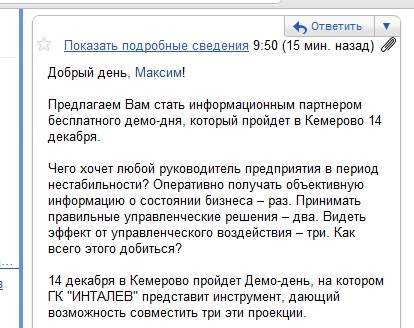

По работе приходится довольно часто сталкиваться с разного рода маркетологами и специалистами по PR.
Работа специалиста по PR похожа на работу доктора. Но его задача не делать нас здоровыми. Хороший специалист по PR просто обязан как и доктор писать так, чтобы никто ничего не понял.
У среднего человека после чтения пресс-релиза не должно оставаться в голове ничего. Если средний человек вроде меня понял смысл релиза, специалиста по PR наверняка понижают в должности и подвергают каким-нибудь гонениям.
